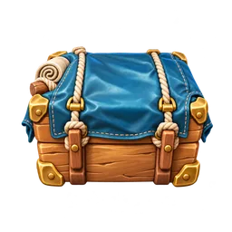

风暴之后 · 两个方向
同一个故事、同一片故乡（营地、旧溪谷、芦苇河湾）、同样 17 处修复，两种核心循环。各玩 15–20 分钟，比较哪一个更想继续。

A · 三消 + 轻合成三消是主玩法，30 个本作关卡。通关带回物资箱，一点开箱，低级材料自动连锁合成；把成品拖到工地修好故乡。修复解锁关前道具、额外步数和更多材料。30 关17 处修复8 页手记 B · 纯合成点四个生成器产出材料，消耗体力。在残骸旁合成能清出新地；20 个居民请求和修复争夺同一批材料。修复会升级生成器、扩大背包、打开新区域。4 个生成器20 个请求17 处修复进度保存在本机浏览器。链接后加 ?fresh=1 可以重新开始。两个版本的「设置」都能看到本次试玩记录（点了多少次、在哪个画面停留多久）。